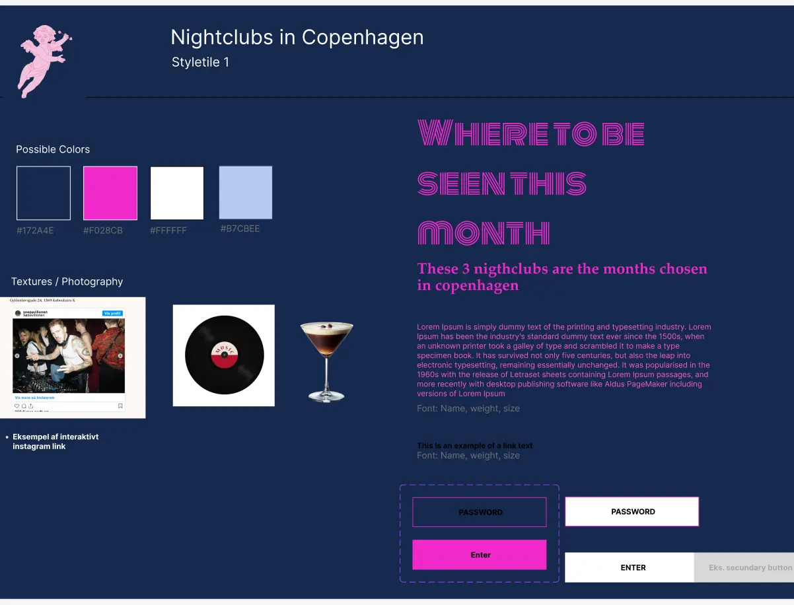
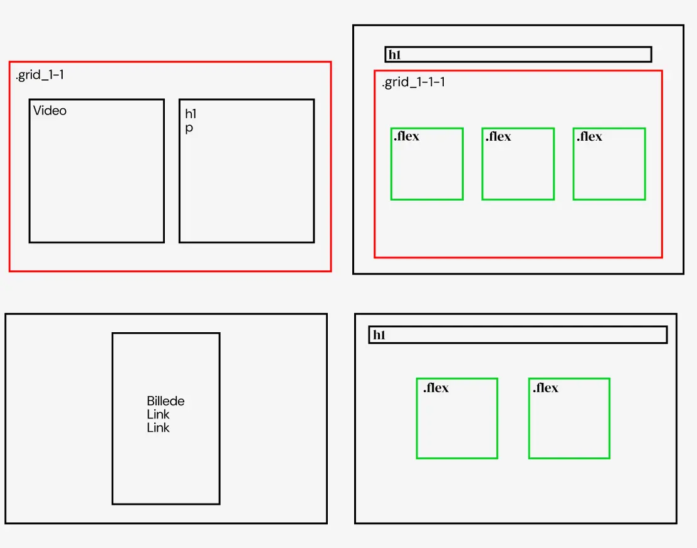
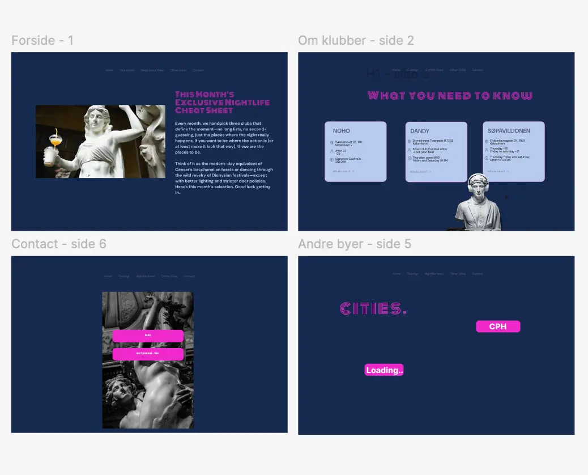

TEMA 3 - GRUNDLÆGGENDE UX/UI
Formål med projektet:
I dette tema har jeg overordnet arbejdet med hele processen fra research til færdig prototype og formidling af et digitalt produkt, som i dette tilfælde var et færdigt emnesite om noget man selv havde viden og interrese for.
Process og løsning:
- Jeg lavede moodboards, styletiles for at finde designretninger jeg kunne teste på. Derefter lofi og hifi prototyper med mobile-first og så efter til desktop.
- Efter at have testet med 5 sekunders test og likert på dem, fandt jeg ud af de visuelle valg jeg skulle gøre brug af.
- Jeg gik derefter igang med at kode sitet ved brug af HTML og CSS, og javascript til min burgermenu. Jeg satte sitet op udfra de styles og layoutdiagrammer jeg havde lavet, og gjorde også brug af fonte jeg hentede fra nettet.
- Efter at aflevere sitet gik jeg igang med at lave en kort præsentation hvor jeg dokumenterede hele min process
Hvad jeg lærte:
- Jeg lærte at lave både low og high fidelity prototyper, altsammen i figma
- Jeg har lært at planlægge og gennemføre kvalitative undersøgelser som fx. interviews, tænke højt test og kvantitative metoder som fx. 5 sekunders test og likert test for at indsamle konkrete indsigter om brugernes behov og adfærd.
- og i takt med ovenstående at optimere brugervenlighed, performance og tilgængelighed gennem løbende tests
- Jeg arbejdede med at strukturere UX/UI-processen i en præsentation med indblik i research, idéudvikling og prototyping til testresultater.


